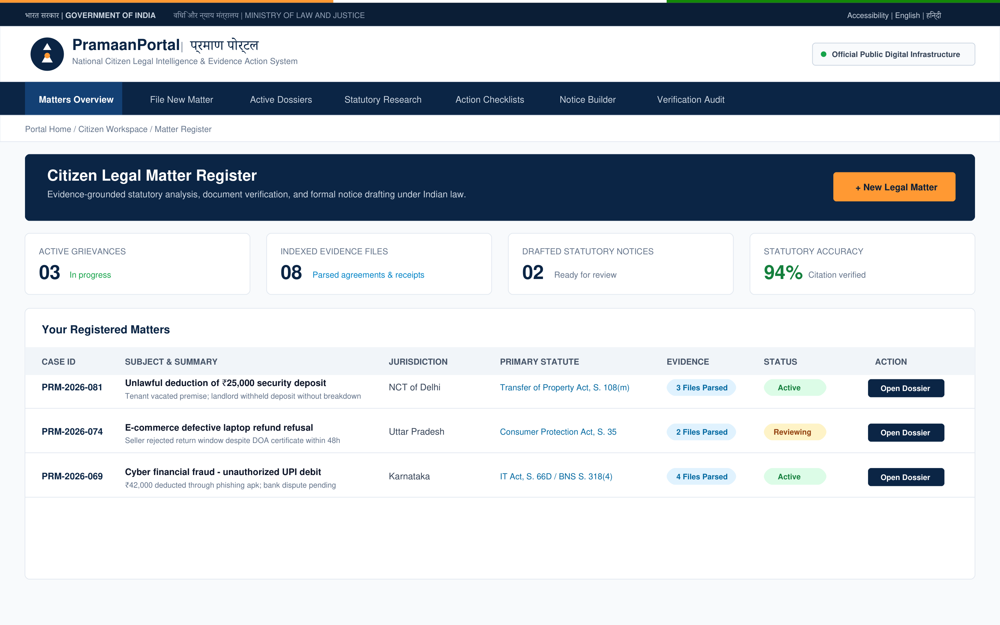
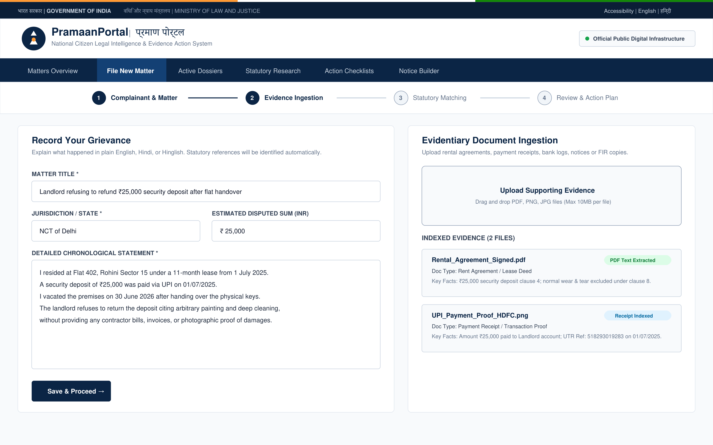
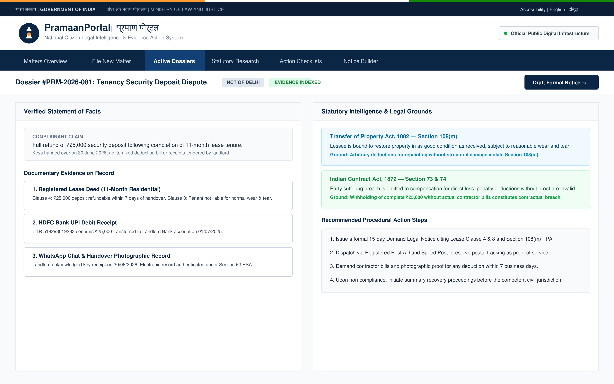
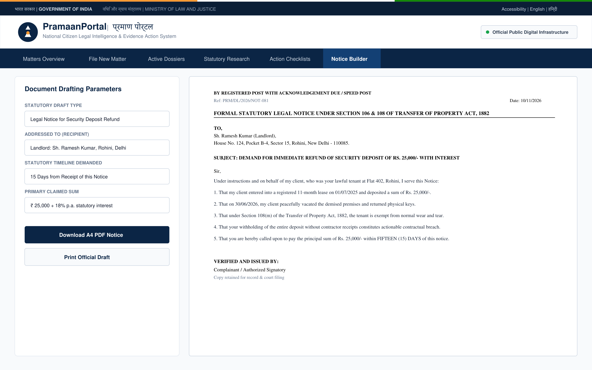
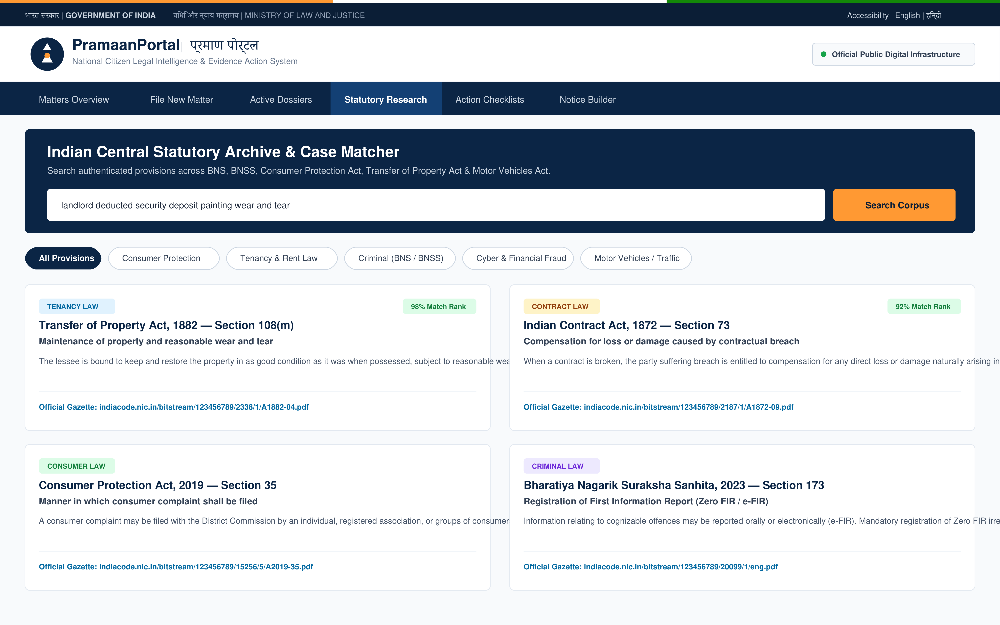

National Digital Public Infrastructure (DPI) Design Standards
These 5 proposals replace prototype and AI-generated styling with the authoritative standards of Indian government portals (such as eCourts, Digital India, DigiLocker, and NALSA).
Authoritative Civic Palette
Deep Navy Blue (#0b2545), Ashoka Royal Blue (#134074), clean white (#ffffff), and subtle saffron accent accents. Replaces muddy brown tones.
Zero Unnecessary Emojis
Strictly clean vector iconography and typography. No emojis or AI glitter that detract from formal legal authority.
Structured Citizen Tables
Clear, responsive data registers for active matters, jurisdiction filters, indexed evidence tracking, and statutory outcomes.
A4 Legal Notice Standard
Institutional legal letterhead views for speed-post / registered AD notice drafting under Section 106/108 of Transfer of Property Act, BNS, or CPA.
Proposal 01: Citizen Legal Matter Register & Executive Dashboard
A clean government portal overview showing citizen grievances, filing statuses, parsed evidence counts, and statutory compliance metrics.

Proposal 02: Citizen Grievance Intake & Evidentiary Ingestion
4-step linear intake stepper with institutional form fields and a real-time evidence parsing dropzone extracting key facts from PDFs, scans, and receipts.

Proposal 03: Split Case Dossier & Statutory Grounding Workspace
Two-column judicial workspace: Verified statement of facts and indexed documentary evidence on the left; statutory provisions (TPA, Contract Act, BNS) and actionable legal steps on the right.

Proposal 04: Formal Statutory Legal Notice Builder
Institutional A4 legal notice letterhead viewer with fact-bound numbered legal grounds, statutory deadlines (15-day notice), advocate/citizen signature block, and PDF/Print export.

Proposal 05: Central Statutory Archive & Gazette Research
Unified search across Indian central acts (BNS, BNSS, Consumer Protection, Motor Vehicles, Labour laws) with category filter chips and direct official India Code Gazette citations.
